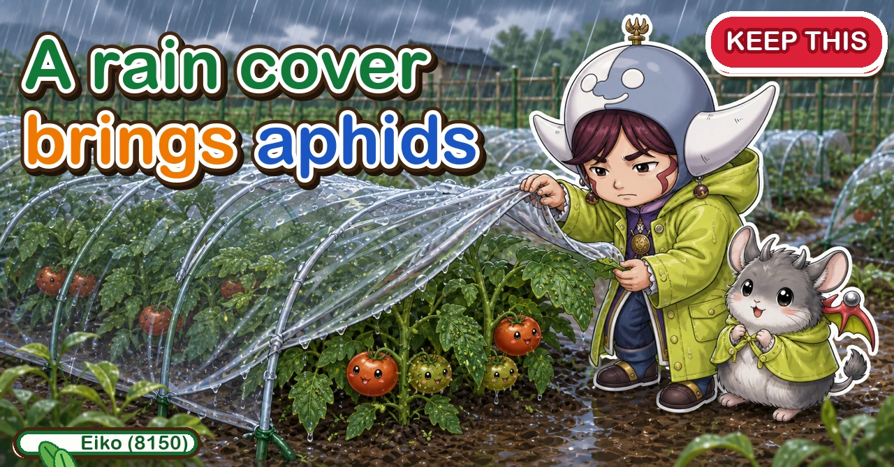
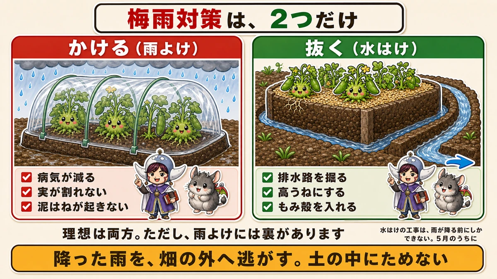
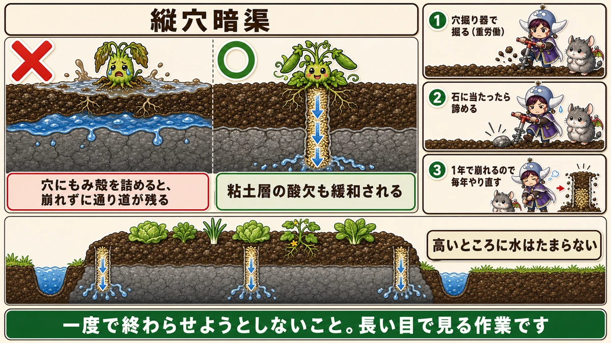
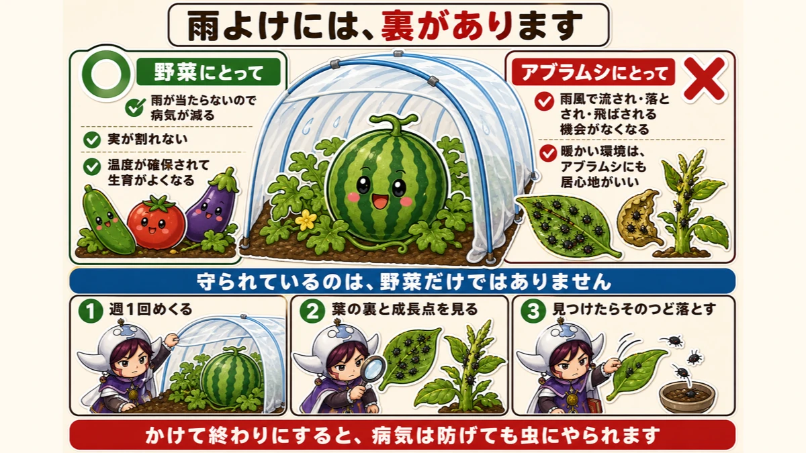
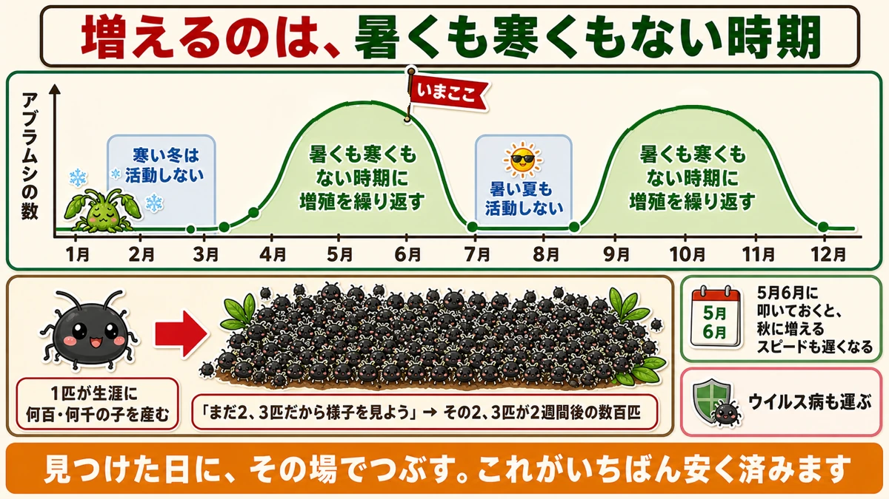

A rain cover brings aphids ☔ And why I still put one up

🗨️ "Every wet spell brings disease."
🗨️ "After rain the garden is too sodden to walk on."
🗨️ "I put a rain cover up and it didn't go well."
Hello, I'm Eiko. Eight years of growing vegetables organically and without pesticides, and a teaching licence in science.
The long wet spell is coming. It's the season with the most disease in a home garden — and the preparation can only be done before the rain starts.
The point, up front:
Putting a rain cover up increases aphids.
Rain covers genuinely reduce disease. And there's something that comes with that. I'd rather you knew both before you put one up ☺️
There are only two things to do

What this diagram says （図解の文字）
- Two things, and no more
- Cover (rain cover) — ☑ less disease ☑ no splitting fruit ☑ no soil splash
- Drain (water) — ☑ dig a drainage channel ☑ raise the beds ☑ add rice husk
- Both is ideal. But the cover has a catch
- Drainage work can only be done before the rain starts
- Get the rain that falls off the plot. Don't let it sit in the soil
- Cover — stretch plastic overhead so the rain never touches the plants
- Drain — get the water that falls off the plot instead of letting it sit
Ideally both. Covering has a catch, which comes later.
① Drainage — and it can't wait
This is soil work, so once the rain has started it's too late. You can't walk on a sodden plot, and walking on it compacts the soil.
Do it while the ground is still dry.
Dig the channel first
Dig a drainage channel along the outside of the beds. Deep, and properly — a half-hearted one does nothing.
And do it early. Try to dig it once the summer weeds are up and you start with a fight against the weeds. Get it done while you have capacity.
Raise the beds
Simple logic: water doesn't sit on high ground.
Roots spend less time submerged — and roots breathe; they can't do it underwater.
Cutting a few escape routes through the bed itself helps further.
Add rice husk
Scatter rice husk over the whole plot. It holds its shape in the soil and creates gaps, which become channels for water.
Two cautions: don't overdo it — drainage can become too free — and husk is slow to break down, with some suggestion of nitrogen drawdown, so raise the beds and keep roots from sitting directly in it.
Vertical drains

What this diagram says （図解の文字）
- Vertical drains
- Pack the hole with rice husk and the channel stays open instead of collapsing
- It also relieves the oxygen starvation in the clay layer
- 1 bore with an auger (hard work) ／ 2 if you hit a stone, give up ／ 3 it collapses within a year, so redo it annually
- Water doesn't sit on high ground
- Don't try to finish it in one go. It's a long-term job
The most effective thing for a badly draining plot:
Bore a deep hole with an auger and pack it with rice husk.
Why it works
A plot that drains badly usually has a clay layer underneath.
However crumbly the topsoil is, water stops at that layer, has nowhere to go, and rises back up as a bog.
A vertical drain punches a hole through it. Packed with husk, the channel doesn't collapse and water drains away down it.
And a second benefit: it relieves the oxygen starvation in the clay layer. Air gets in, and soil life can function.
Being honest: it's hard work
You lean your weight on an auger and grind down. It's heavy labour, and you do several.
If you hit a stone, stop — forcing it chips the tool.
And the holes collapse within a year, so it's an annual job.
It's still worth it
The boggy patches visibly shrink. And repeated year after year, the whole plot improves — there are cases of former paddy ground becoming workable garden soil over several years.
Don't try to finish it in one season. It's a long view.
② Covering — what it actually does
Hoops and plastic over tomatoes or watermelons. The effects are clear:
- rain never touches the leaves, so disease drops sharply
- fruit doesn't split or spoil in the wet
Tomatoes are poor in rain — water entering the fruit splits it, and leaves kept wet spread disease. The benefit is real.
And it stops soil splash
A quieter but large effect. Rain splashes soil up onto the leaves, and that is the commonest entry point for disease.
Under a cover, the rain never reaches the ground, so there is no splash.
It's the same goal as removing lower leaves to put space between soil and foliage — solved from above instead.
But the cover has a catch

What this diagram says （図解の文字）
- A rain cover has a catch
- ○ For the vegetables — ✓ no rain, so less disease ✓ fruit doesn't split ✓ temperature is held, so growth improves
- × For the aphids — ✓ no more being washed, knocked or blown off ✓ a warm environment suits aphids too
- It isn't only the vegetables that are being sheltered
Lift the plastic off a covered watermelon and you find the undersides of the leaves black with aphids. Curled leaves, the growing points packed solid — clearly more than on the uncovered plants. Why?
Reason 1: nothing knocks them off any more
Grown in the open, aphids get rained and blown on, and are washed away, knocked down and blown off. Numbers fall to some extent without anyone doing anything.
Under a cover, that stops. It isn't only the vegetables being sheltered.
Reason 2: it's warm and comfortable
A cover holds temperature, which visibly improves growth. And it's equally pleasant for aphids. Both parties under the same roof, both comfortable.
So don't put it up and walk away
If you use a rain cover, pest management comes with it:
- lift the plastic once a week and look
- check the undersides of leaves and the growing points
- take off what you find, every time
Put it up and forget it and you'll avoid the disease and lose the crop to insects.
The aphid's year

What this diagram says （図解の文字）
- They multiply when it's neither hot nor cold
- Aphid numbers ／ inactive in cold winter ／ inactive in high summer
- They breed repeatedly through the mild periods
- One aphid produces hundreds or thousands of offspring in its life
- "It's only two or three for now…"
Aphids overwinter as adults or eggs. And their activity has a clear shape:
- Deep winter — barely active, almost no damage
- Late spring to early summer — the peak of multiplication
- High summer — activity drops, almost no damage
- Autumn — a second peak
They build up in the comfortable periods, not the extremes.
Hit them now and autumn is easier
Reduce the numbers now and the autumn build-up is slower.
Through summer they're quiet but they don't disappear — the survivors from spring are autumn's starting population. Control now is an investment in autumn.
One becomes thousands
A single aphid produces hundreds or thousands of offspring in its life. And it can bear live young directly rather than laying eggs, so the rate is in another league.
Therefore: don't let a few go.
"There are only two or three; I'll keep an eye on it." Those two or three are several hundred a fortnight later. Squash them the day you see them. It is by far the cheapest option.
To sum up
- ✅ Two jobs: cover, and drain
- ✅ Drainage work can only be done before the rain
- ✅ Dig the channel deep, and before the weeds come
- ✅ Raise the beds — roots breathe
- ✅ Rice husk opens the soil, but don't overdo it
- ✅ Vertical drains: bore and pack with husk
- ✅ Bad drainage usually means a clay layer; the drain punches through it
- ✅ Stop at a stone; redo the holes each year
- ✅ A cover means less disease, no split fruit and no soil splash
- ✅ And more aphids
- ✅ Because rain and wind no longer remove them, and warmth suits them
- ✅ Lift the cover weekly and check undersides and growing points
- ✅ Aphids peak in late spring and again in autumn
- ✅ Hitting them now slows the autumn build-up
- ✅ One produces hundreds. Deal with a few rather than waiting
- ✅ They carry viruses, so fewer insects means less disease
You don't have to do all of it. Dig one drainage channel along the outside of a bed this weekend. Once the rain starts, you can't ☔
Thank you for reading!